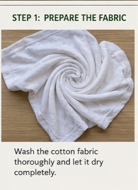
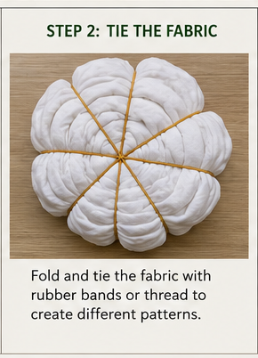
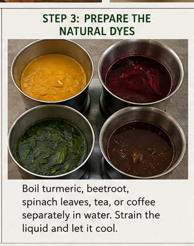

Natural Colour Effects Using Eco-Friendly Dyes
This project demonstrates the traditional tie and dye technique using natural colours obtained from plant-based sources.
Natural dyes are eco-friendly, biodegradable, and safe for the environment.

Wash the cotton fabric thoroughly and let it dry completely.

Fold and tie the fabric with rubber bands or thread to create different patterns.

Boil turmeric, beetroot, spinach leaves, tea, or coffee separately in water. Strain the liquid and let it cool.

Dip different sections of the tied fabric into the natural dyes and leave it for 30 to 60 minutes.

Allow the fabric to dry completely. Remove the rubber bands and observe the final design.


The final fabric displayed vibrant patterns created using natural colours. This project demonstrates that sustainable methods can create beautiful textile designs.